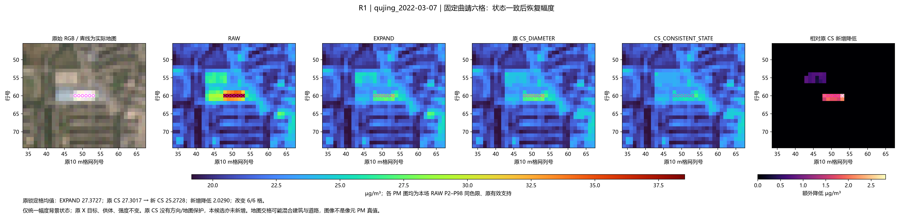
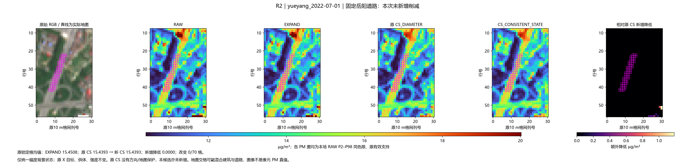
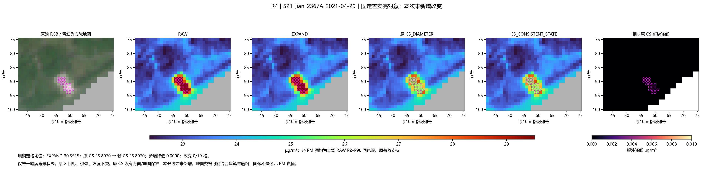
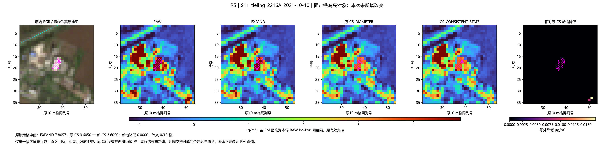
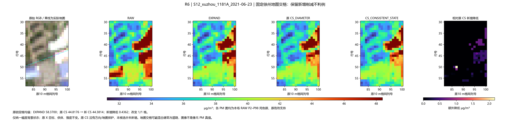
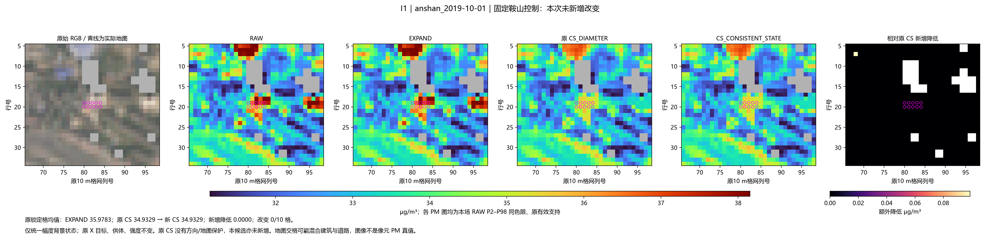
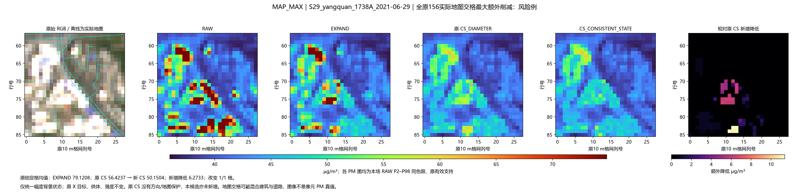

原156场＋50新增日期，0新拟合，冻结PM头。固定六例及全原156地图最不利点如实保留。原对象/供体/参数不变，图中全部使用同场RAW P2–P98。
结果与风险 · 预定机制 · 固定例读数 · 全范围摘要 · 锁定道路/控制变化 · 输入分解
qujing_2022-03-07；原CS 27.3017 → 新CS 25.2728，相对旧CS新增降低 2.0290。

yueyang_2022-07-01；原CS 15.4393 → 新CS 15.4393，相对旧CS新增降低 0.0000。

S21_jian_2367A_2021-04-29；原CS 25.8070 → 新CS 25.8070，相对旧CS新增降低 0.0000。

S11_tieling_2216A_2021-10-10；原CS 3.6050 → 新CS 3.6050，相对旧CS新增降低 0.0000。

S12_xuzhou_1181A_2021-06-23；原CS 44.8176 → 新CS 44.3814，相对旧CS新增降低 0.4362。

anshan_2019-10-01；原CS 34.9329 → 新CS 34.9329，相对旧CS新增降低 0.0000。

S29_yangquan_1738A_2021-06-29；原CS 56.4237 → 新CS 50.1504，相对旧CS新增降低 6.2733。
